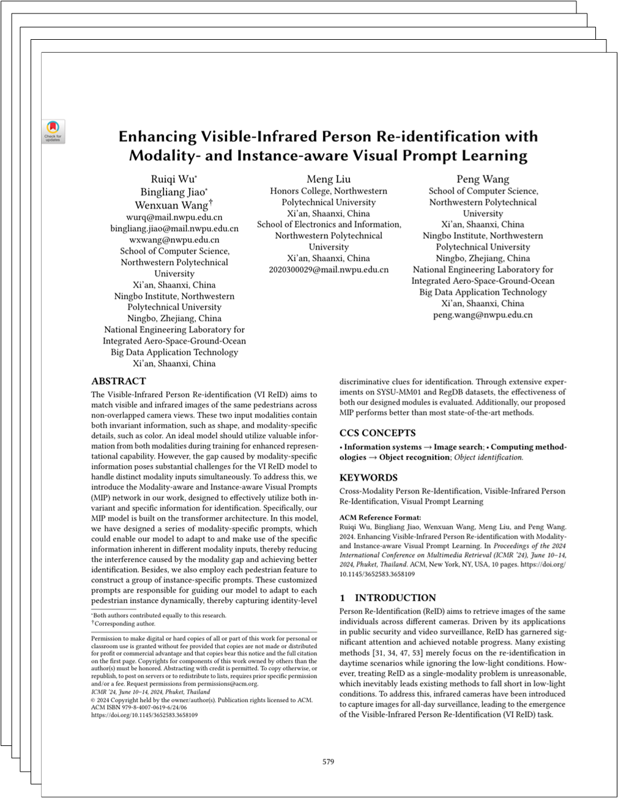

|
Northwestern Polytechnical University
National Engineering Laboratory for Integrated Aero-Space-Ground-Ocean Big Data Application Technology
|
|
The Visible-Infrared Person Re-identification (VI ReID) aims to
match visible and infrared images of the same pedestrians across
non-overlapped camera views. These two input modalities contain
both invariant information, such as shape, and modality-specific
details, such as color. An ideal model should utilize valuable information
from bothmodalities during training for enhanced representational capability.
However, the gap caused by modality-specific information poses substantial
challenges for the VI ReID model to handle distinct modality inputs simultaneously.
To address this, we introduce the Modality-aware and Instance-aware Visual Prompts
(MIP) network in our work, designed to effectively utilize both invariant
and specific information for identification. Specifically, our
MIP model is built on the transformer architecture. In this model,
we have designed a series of modality-specific prompts, which
could enable our model to adapt to and make use of the specific
information inherent in different modality inputs, thereby reducing
the interference caused by the modality gap and achieving better
identification. Besides, we also employ each pedestrian feature to
construct a group of instance-specific prompts. These customized
prompts are responsible for guiding our model to adapt to each
pedestrian instance dynamically, thereby capturing identity-level discriminative
clues for identification. Through extensive experiments on SYSU-MM01 and RegDB datasets,
the effectiveness of both our designed modules is evaluated. Additionally, our proposed
MIP performs better than most state-of-the-art methods.
|
|
We introduce a MIP network designed for the VI ReID task.
Our primary focus is on adapting the model to different modality inputs and instance inputs,
thereby mining the correspondences between different modalities/instances to facilitate VI ReID.
We achieve these goals by employing two distinct sets of visual prompts.
Specifically, we produce modality-specific prompts and instance-specific prompts according to current modality and instance input,
and these two sets of prompts are concatenated after the feature embedding.
By making use of modality-specific and instance-specific information preserved in these prompts,
the model can explore potential correspondences between different modalities and instances, thereby facilitating the VI ReID.
|
|
MIP Overall Framework
|
|
The overall framework of our proposed MIP network, which consists of a backbone model and two major modules.
(a) A pre-trained vision transformer is used as the backbone model.
(b) Modality-aware Prompts Learning (MPL) module produces modality-specific prompts
for input visual embeddings of each layer according to the modality labels of input images.
(c) Instance-aware Prompts Generator (IPG) module generates instance-specific prompts,
and the generated prompts are supervised by "IAEL loss".
The "IAEL Loss" is our proposed Instance-aware Enhancement Loss.
The two kinds of rompts help the backbone network to adapt to different modality and instance inputs.
|
|  |
Enhancing Visible-Infrared Person Re-identification with Modality- and Instance-aware Visual Prompt Learning
Ruiqi Wu*, Bingliang Jiao*, Wenxuan Wang†, Meng Liu, Peng Wang *Equal contribution; †Corresponding author. ICMR 2024, Oral [Paper] [Bibtex] [arXiv] [GitHub] |
|
Comparison Results
|
|
The experiment results of our MIP and other state-of-the-art methods under various test modes of SYSU-MM01 and RegDB datasets.
Summarily, our proposed MIP outperforms other state-of-the-art methods on both two mainstream datasets.
|
|
Visualization Results
|
|
The visualizations results of attention maps of our MPL module and baseline model.
From the second column in each case, we could find that the baseline model tends only to capture the explicit correspondence between different modality inputs.
Such as only focusing on the upper dress part while ignoring the skirt part in case (a).
As for our MPL module, with the carefully designed modality-specific prompts, it could effectively adapt to and make use of the modality-specific information.
This enables our MPL model to explore and capture the implicit correspondence between the skirts part. Case (b) shows a similar result.
|
Acknowledgements
The website is modified from this template.
|